아스텔라 제2부 · 선택 의례체 기반 15변주
사용자가 고른 다섯 스테이지의 정확한 선택안을 바탕으로 각각 세 변주를 제작했습니다. 선택안의 머리·인간형 체형·핵심 장치·화풍을 보존하고 외피 분할, 기능 배치와 서사 자세를 바꿨습니다. 각 초기 생성에 해당 층 선택 원본을 입력했습니다. 이미지를 누르면 1536 × 1024 원본 PNG가 열립니다.
Stage01 · 기억을 흘리는 정찰병
선택 원본: v4 Stage01 의례체 3안
원형 방사셔터 투구, 긴 정찰 체형, 가슴 모래시계


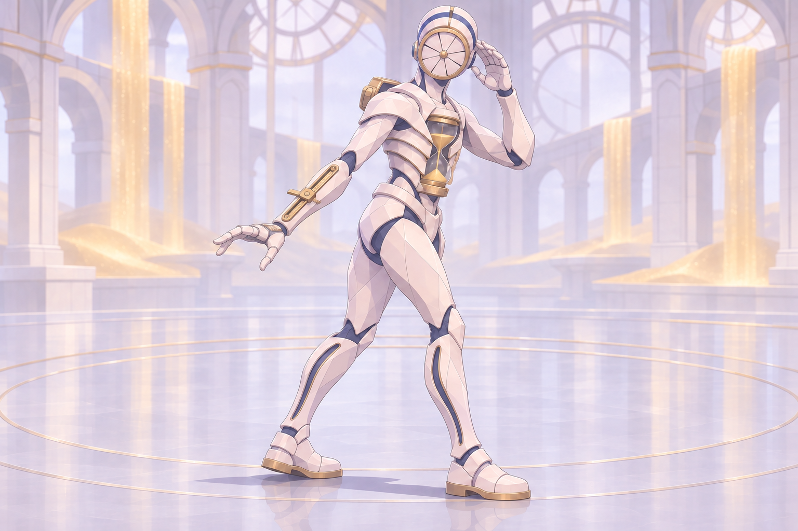

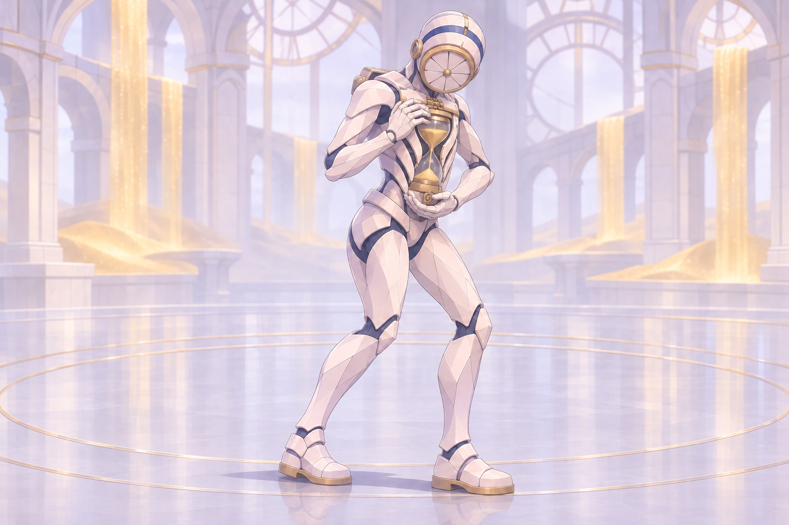

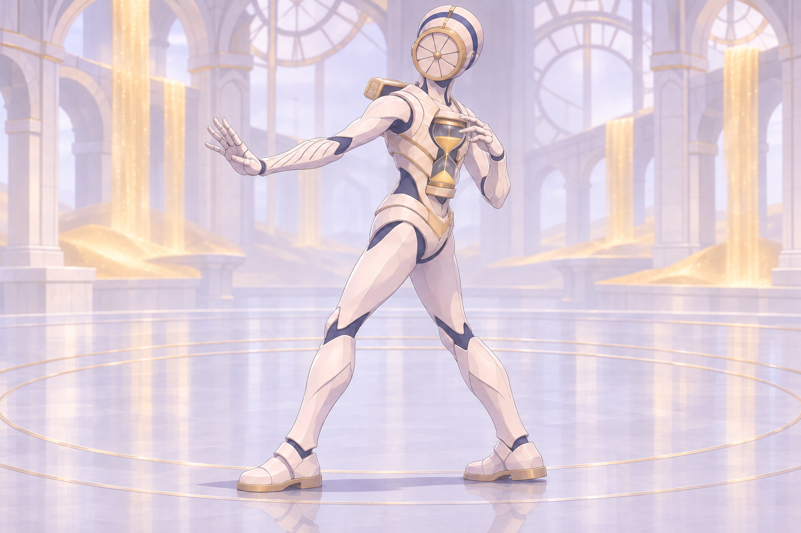
Stage02 · 끝나지 않는 진혼곡의 무희
선택 원본: 사용자 첨부 2026-11-12 오전 10.56.41 스크린샷
original ObjectBossExploration_v1/Stage02/03-effigy.png와 동일 선택 컨셉: 다면체 봉인머리, 긴 V흉부, 등 태엽, 외부 음판

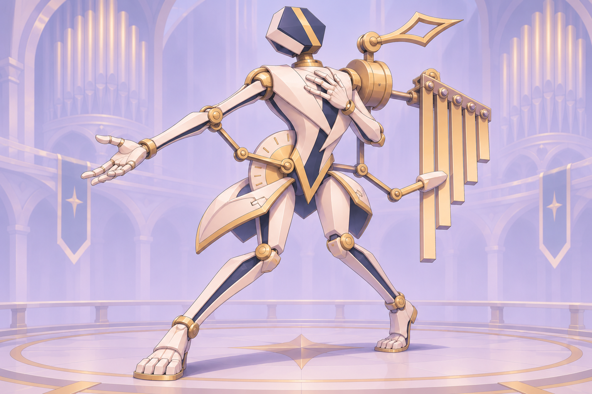

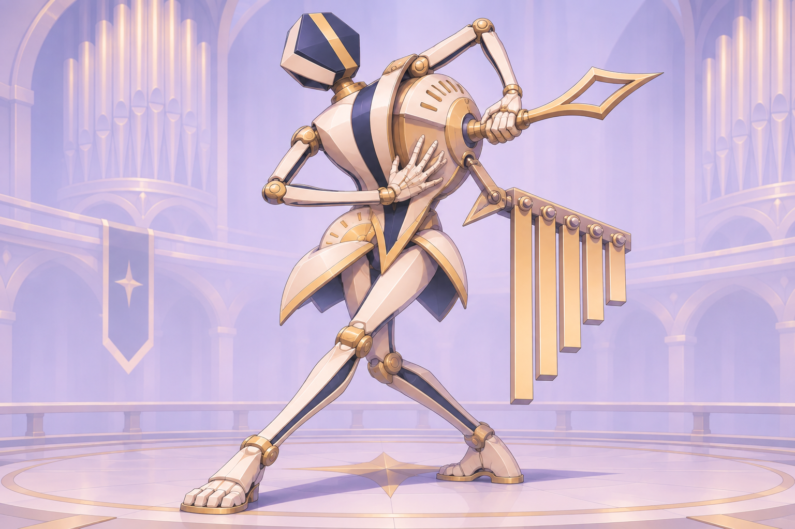

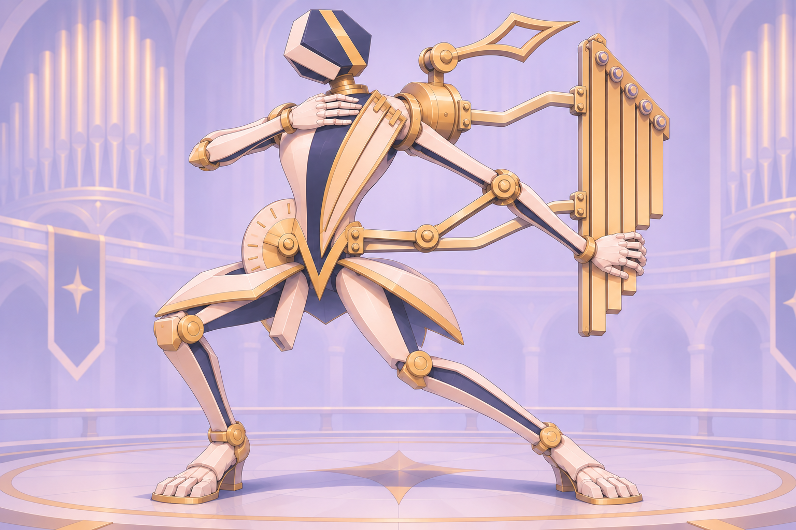
Stage03 · 얼어붙은 혈관의 연금술사
선택 원본: v4 Stage03 의례체 1안
짧은 백금 의료베일, 긴 치유 체형, 가슴 맥박과 등 수은관


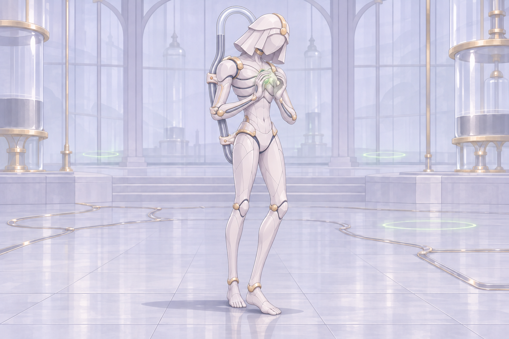

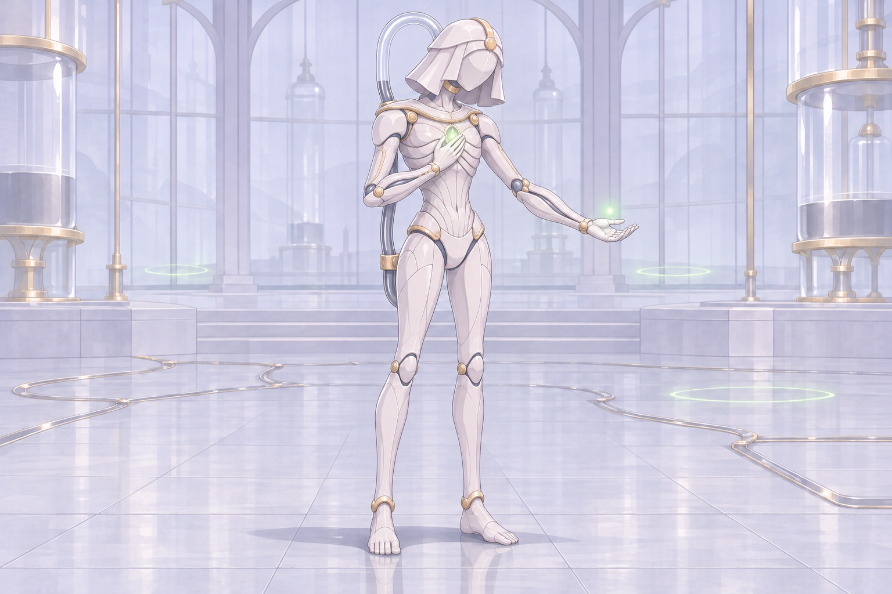

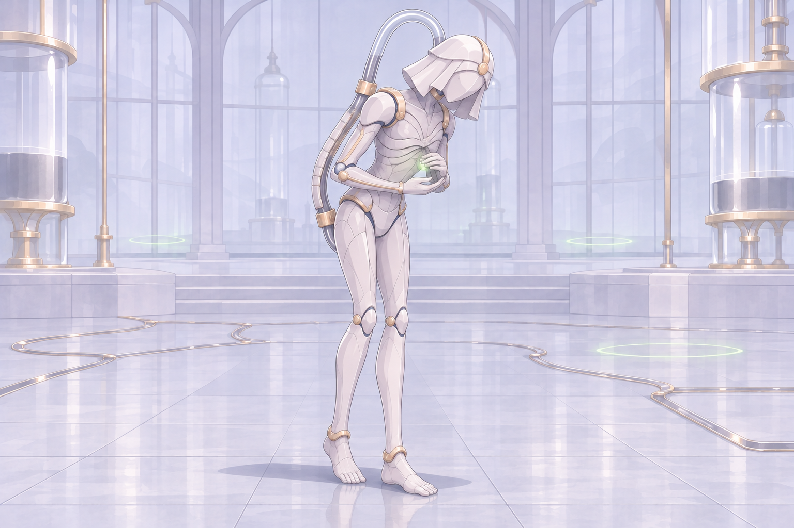
Stage04 · 영원히 타오르는 가마의 수호자
선택 원본: v4 Stage04 의례체 2안
네모 환기두건, 넓은 인간형 수호 체형, 직사각 방패, 여덟 사슬


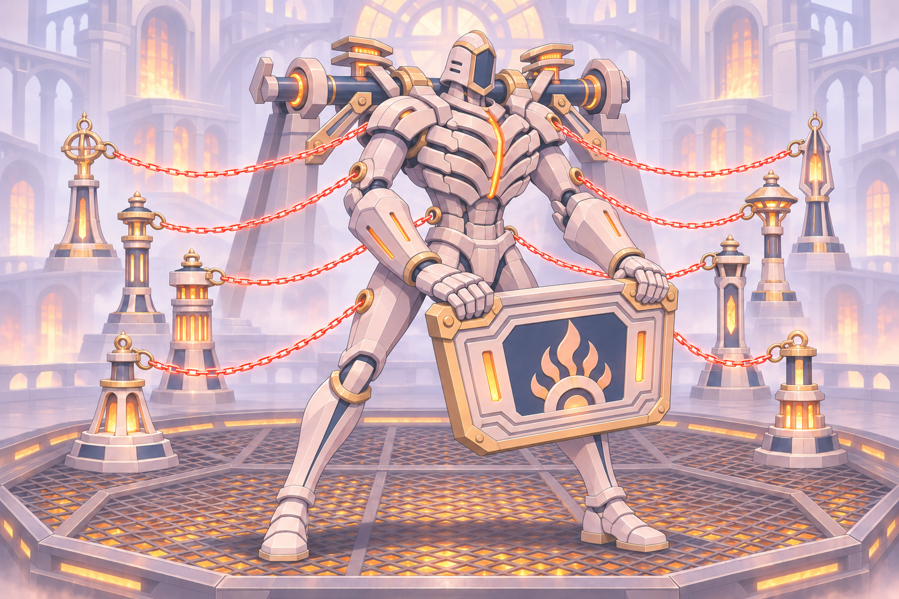

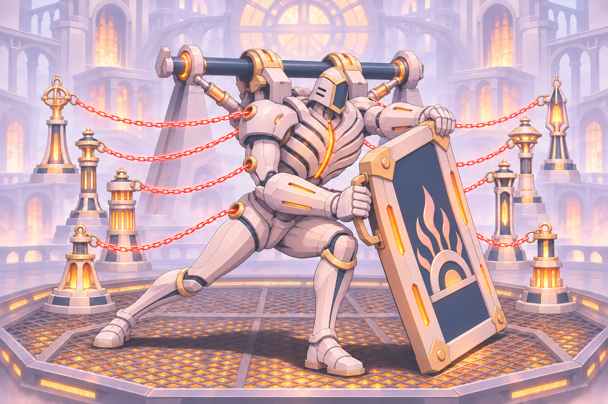

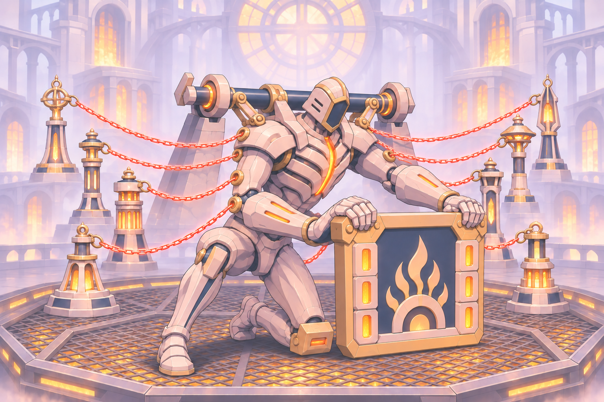
Stage05 · 무너진 천구를 떠받치는 부단장
선택 원본: v4 Stage05 의례체 2안
세겹 타원 봉인투구, 한어깨 천구, 인간형 한무릎 체형, 원본 시침 창 유지


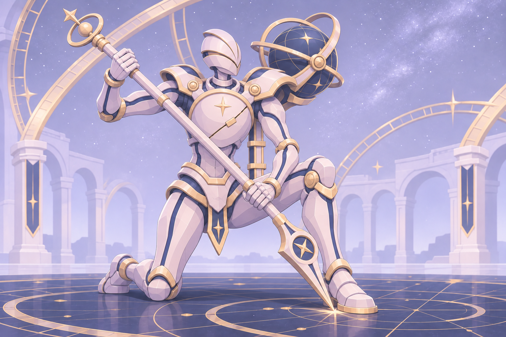

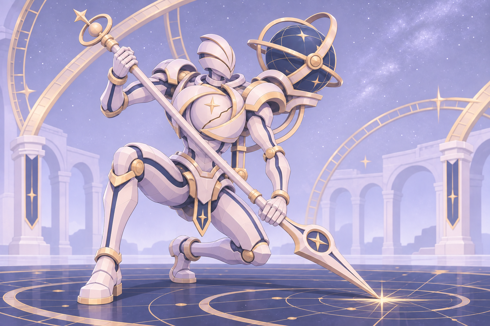

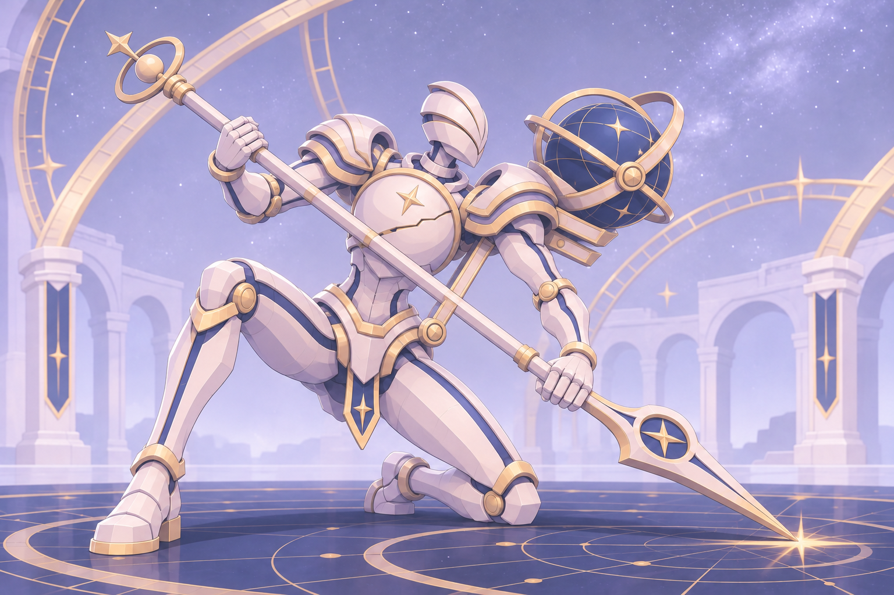
제작: 내장 image_gen. 단일 전신 컨셉샷이며 실제 3D 메시나 회전 렌더는 아닙니다. 전체 프롬프트 · 공통 아트 방향